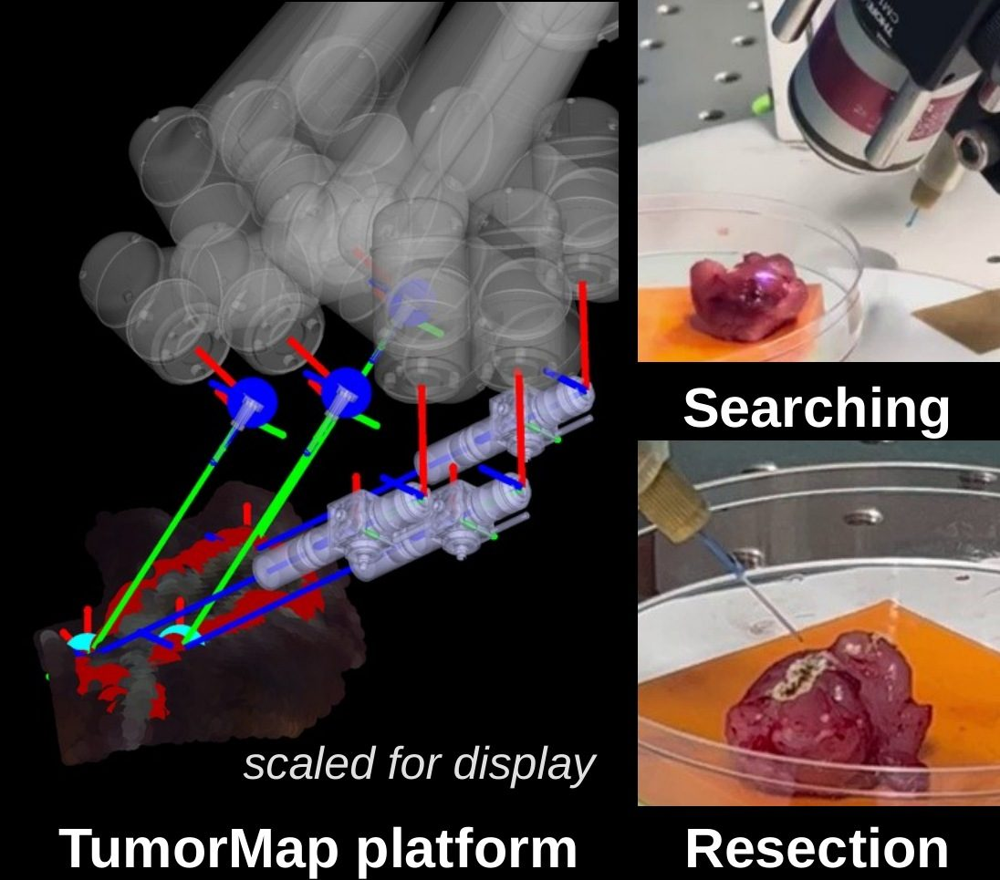
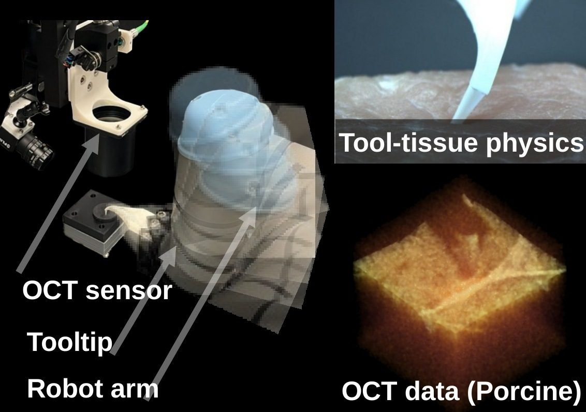
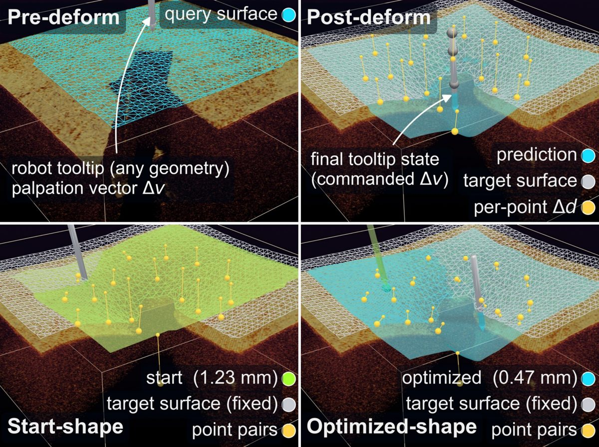
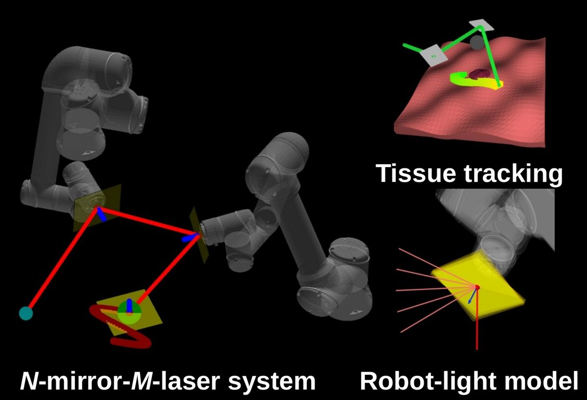
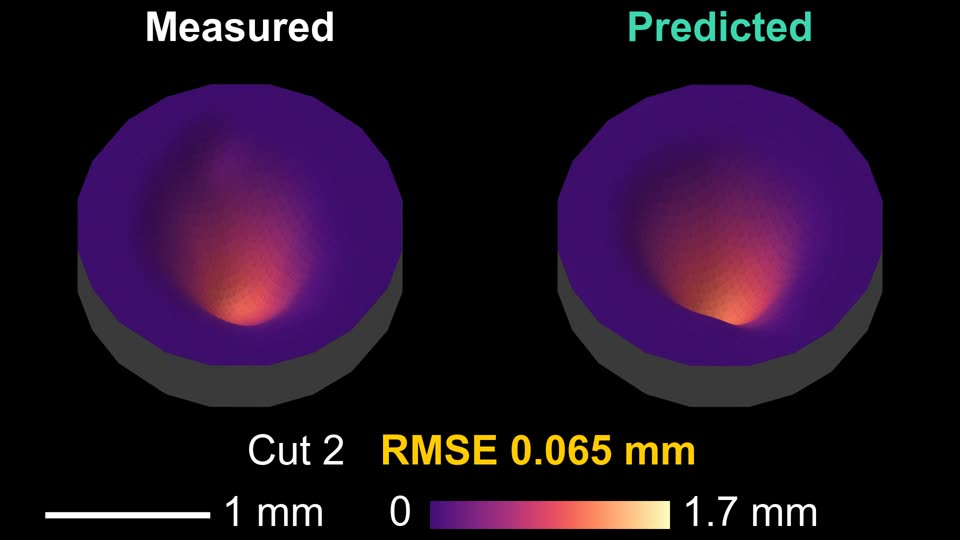

Guangshen Ma
Postdoctoral Research Fellow, Department of Robotics, University of Michigan
I develop physical AI for the micro-scale biological world: robots that perceive, predict, and act on soft, deforming tissue. My work combines multimodal 3D perception (optical coherence tomography, ultrasound, fluorescence, and stereo/RGB-D vision), learned models of tissue deformation, and closed-loop robot control, with applications in surgical robotics, medical AI, and translational research.
At Michigan, I work with Prof. Mark Draelos in the Image-Guided Medical Robotics Lab. I received my Ph.D. in Mechanical Engineering and an M.S. in Computer Science from Duke University in 2023, advised by Prof. Patrick J. Codd (Brain Tool Laboratory), and was a research intern at Google.
News
- Oct 2026Preprint on OCT-guided closed-loop shape control of soft tissue is on arXiv.
- Sep 2026Preprint on tracker-free robotic ultrasound calibration is on arXiv.
- 2026TumorMap accepted to npj Digital Surgery.
- 2026Robotic ultrasound paper accepted to IEEE Transactions on Medical Robotics and Bionics.
- May 2026Won the Second Prize in the Rising Star Poster Competition at ISMR 2026.
- 2026Two papers at ICRA 2026: OCT-DeformNet and robotic relay of free-space optical beams.
- May 2025Received Rising Star recognition at the ICRA 2025 Workshop on the Evolving Landscape of Surgical Robotics.
Publications
* equal contribution · Full list in my CV and on Google Scholar.
Selected Papers
Hover over a figure to play its video.





Journal Articles
- K. Koo*, G. Ma*, X. Wang, and M. Draelos, "A deep learning based robotic ultrasound system for automated probe alignment and precise finger joint localization with underwater light correction," IEEE Transactions on Medical Robotics and Bionics, accepted, 2026.
- G. Ma*, R. Prakash*, et al., M. Draelos, W. C. Eward, and P. J. Codd, "TumorMap: A robotic surgical platform for multimodal tumor mapping and laser resection," npj Digital Surgery, accepted, 2026.
- G. Ma, M. McCloud, Y. Tian, A. Narawane, H. Shi, R. Trout, R. P. McNabb, A. N. Kuo, and M. Draelos, "Robotics and optical coherence tomography: Current works and future perspectives," Biomedical Optics Express, 16(2):578–602, 2025. (Invited review)
- X. Peng, K. Koo, G. Ma, M. Draelos, and X. Wang, "Photoacoustic imaging combined with robotics: A review of current works," Biomedical Optics Express, 16(11):4730–4745, 2025.
- K. Koo, X. Peng, G. Ma, et al., M. Draelos, and X. Wang, "Volumetric ultrasound and photoacoustic imaging of inflammatory arthritis in human finger joints via robotic arm powered arc scans," Biomedical Optics Express, 16(11):4746–4766, 2025.
- G. Ma, W. Ross, M. Tucker, P.-C. Hsu, D. M. Buckland, and P. J. Codd, "Touch-point detection using thermal video with applications to prevent indirect virus spread," IEEE Journal of Translational Engineering in Health and Medicine, 9:1–11, 2021.
- M. Tucker, G. Ma, W. Ross, D. M. Buckland, and P. J. Codd, "Creation of an automated fluorescence guided tumor ablation system," IEEE Journal of Translational Engineering in Health and Medicine, 9:1–9, 2021.
Conference Papers
- G. Ma*, T. Qin*, J. Liu, and M. Draelos, "OCT-DeformNet: Optical coherence tomography guided biological tissue shape prediction for robot palpation in microsurgery," ICRA, 2026.
- G. Ma, P. J. Codd, and M. Draelos, "Robotic relay of free-space optical beams for medical applications," ICRA, 2026.
- G. Zhou, Y. Wang, Y. Ling, G. Ma, R. P. McNabb, A. N. Kuo, N. Valikodath, and M. Draelos, "Imaging eyes in motion: Dynamic compensation with robotic optical coherence tomography," ISMR, 2026.
- J. Liu, G. Ma, G. Zhou, H. Pan, C. Lam, C. Jin, N. Valikodath, and M. Draelos, "Dual-arm teleoperated robotic microsurgery system with real-time volumetric OCT image feedback," IROS, 2025.
- G. Ma and M. Draelos, "Geometry-aware volumetric data stitching using local surface mapping and robot optical coherence tomography," ICRA, 2025.
- G. Ma, R. Prakash, B. Mann, W. Ross, and P. J. Codd, "3D laser-and-tissue agnostic data-driven method for robotic laser surgical planning," IROS, 2023.
- G. Ma, W. Ross, and P. J. Codd, "N-mirror robot system for laser surgery: A simulation study," ISMR, 2023.
- J. Luo, G. Ma, et al., W. M. Wells III, and S. Frisken, "On the dataset quality control for image registration evaluation," MICCAI, 2022.
- G. Ma, W. Ross, and P. J. Codd, "StereoCNC: A stereovision-guided robotic laser system," IROS, 2021.
- G. Ma*, S. R. Oca*, Y. Zhu, P. J. Codd, and D. M. Buckland, "A novel robotic system for ultrasound-guided peripheral vascular localization," ICRA, 2021.
- G. Ma*, W. A. Ross*, I. Hill, N. Narasimhan, and P. J. Codd, "A novel laser scalpel system for computer-assisted laser surgery," ICRA, 2019.
Preprints and Manuscripts Under Review
- K. Koo*, G. Ma*, X. Wang, and M. Draelos, "Tracker-free robotic ultrasound calibration with a spherical-marker phantom and threshold-free center localization," arXiv:2609.22483, 2026.
- C. Zhang*, G. Ma*, and M. Draelos, "Robotic optical coherence tomography-guided geometric modeling of soft tissue: 3D representations for data-driven closed-loop shape control," arXiv:2610.32961, 2026.
Service & Honors
Reviewer
- IEEE Robotics and Automation Letters (RA-L)
- IEEE ICRA, IEEE/RSJ IROS
- ICLR
Honors
- Second Prize, Rising Star Poster Competition, ISMR 2026
- Rising Star Recognition, ICRA 2025 Workshop on Surgical Robotics